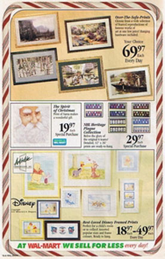

History
Many in Canada and America are familiar with this Santa and have a framed version on their walls from the original launch by the major retailers a few years ago. Now the program is launching 100's of other images along with our all year Part of the Spirit products.
Process
Santa's Favourite products are those that take a portion of the retail profit and help those in need, in a true Santa Claus spirit.
All the new products coming are exclusive to this site and
associated businesses. They are internationally protected by copyright agreements and registered under Industry Canada. Based on the record selling pace of Santa's Favourite framed print, we know the impact we can make together with every other Christmas item we place Santa's Favourite logo on.
Santa's Favourite clothing line called Part of the Spirit will
include shirts, hats and much more.

The original promotion of Santa's Favourite Prints